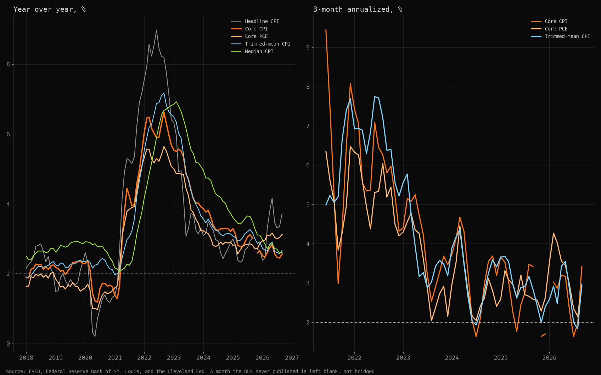

Fed Liquidity Lab.

Net liquidity is the Fed's balance sheet less the Treasury's cash account and the overnight reverse repo facility. Many people watch it as a guide to risk assets. I built a tracker for it, then tested whether it works.
The question, the method, the finding, and what it means
- The question
- Does net liquidity, with inflation and output, tell you when to hold less stock and more cash?
- Data and method
- The test uses FRED data only. I began with eighteen rules and then wrote a second design, which I documented and locked before running it. Every week is tested with only the data that had been published by then, net of trading costs, against buy and hold.
- What I found
- It does not. From 2020 the 18 rules returned 6.0 percent a year against 8.1 percent for buy and hold. The second design lost less in 2008 but failed its own test, because its edge over a plain mix of the same weights could not be distinguished from zero.
- What it means
- Net liquidity is a reasonable gauge of conditions and a poor timing signal. I would monitor it, but I would not trade on it. The most durable part of the project is the testing framework.
A weekly tracker with alerts
It pulls the Fed's balance sheet from FRED every week and works out net liquidity. It tracks seven measures of consumer inflation and the main gauges of output. Every series is checked for gaps, stale data and odd prints before anything uses it.
A rules engine sends me a desktop alert when a trigger is crossed. A calendar tells me the day before CPI, the jobs report and a Fed decision.
The scenarios replay what the balance sheet did in March 2020 and in mid 2022 and apply those dollar flows to today's levels. In the 2020 replay the Fed adds $2.8 trillion of assets and the Treasury takes $1.3 trillion into its cash account, so net liquidity rises $1.5 trillion, or 26 percent. These scenarios are historical analogues and should not be read as forecasts.

Net liquidity, and what two past episodes would do to itLeft, net liquidity and Fed assets since 2021. Right, the next 26 weeks if the balance sheet moved as it did in March 2020 and in mid 2022. Source: FRED. 
Inflation, seven waysLeft, year over year. Right, 3 month annualized, the pace that matters for the next decision. The dotted line is the 2 percent target. A break in a line is a month the BLS never published. Source: FRED, Cleveland Fed.

Two designs against buy and hold
A year for the 18 rules since 2020, against 8.1 percent for buy and hold. They held less stock, and the timing cost about another point on top of that.
What the Sahm recession rule cost, the most of any rule. It turned on after the 2020 crash and stayed on through the rebound.
Pre-registered criteria the second design passed. It cut the worst drawdown from 24.2 to 17.9 percent over 2006 to 2019. It failed the most important one, which asks whether its edge over a matched static mix is above zero. The interval ran from minus 0.3 to plus 1.5 percent a year.
How far the second design beat the same mix rebalanced in 2008. In the other 13 years it was about a third of a point a year behind.
The best t-stat the allocator reached out of sample, on stocks. It only tilts at 2 or more, so it holds the neutral mix.

The 18 rules against buy and holdOrange is the rules. White is buy and hold of a 50 / 30 / 10 / 10 mix of stocks, Treasuries, credit and cash. Net of 5 bps costs. Source: FRED. 
The locked design on a clean windowWritten down and hashed before it was tested, on 2006 to 2019, with the Nasdaq Composite standing in for stocks. It cut the 2008 loss and ended slightly ahead of buy and hold, but the gap is inside the noise. Source: FRED.
The first set of rules reflected my own view of what the data should say. It had eighteen nodes, several of them slow to react. My reading is that they stayed defensive through rebounds, which is consistent with what the Sahm rule did after 2020.
The second design used four fast nodes with thresholds taken only from the trailing three years, and I fixed the pass and fail criteria before running it. Locking the design in advance matters, because with only a few years of data and many ways to cut it, almost any strategy can be made to look good after the fact.
The design failed, and I left it unchanged. Even a pass would have led only to paper trading it forward, and not to trading real money.
Public data, tests and a lock
- Every series is declared once with its frequency, publication lag and plausible range. The pipeline caches it, records where it came from, and holds back anything that was not public yet on the date being tested.
- Growth rates count calendar months. The October 2025 CPI was never published, and counting rows instead of months made headline CPI look 0.3 points too high.
- The second design was hashed before it was tested, and the script refuses to run if the file has changed.
- More than 140 tests cover the point in time logic, the alerts and the backtest, including checks that changing the future cannot change the past.
The limits of the analysis
Stocks are price only. Treasuries and credit are duration proxies with no defaults. The clean window uses the Nasdaq Composite as its equity sleeve, because FRED carries the S&P 500 only from late 2016. The 2020 to 2026 window is one bull market and one drawdown, so it cannot prove much either way, and I designed the second test after seeing it.
CPI, GDP and a few other series are used as last revised, not as first published, so some revision look ahead remains. Real vintages need an API key I have not used yet.
Nothing here is investment advice. Data from FRED at the Federal Reserve Bank of St. Louis, the Cleveland Fed, the Atlanta Fed and the NY Fed. No Bloomberg data and nothing from an employer.